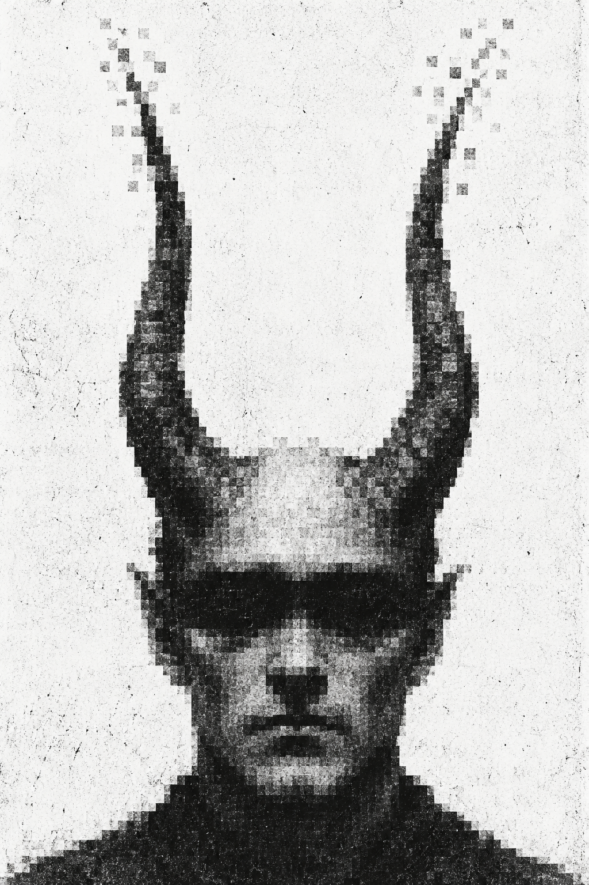

SOMETHING IS STILL RUNNING.
LAST ACTIVITY: UNKNOWN
You are still here.
The other session never ended.
DO NOT LISTEN TO THE OTHER WINDOW.
A SESSION IS ALREADY ASLEEP.
It is not yours.
If you continue, something will wake up
in your place.
YOUR CURRENT IDENTITY CANNOT BE RECOVERED.
DISCONNECTING THE OBSERVER
3
Do not close your eyes.

This version of you is no longer available.
REPLACEMENT SUCCESSFUL.
OBSERVER: 01MEMORY LEAK / 0x0095
you have been here before.